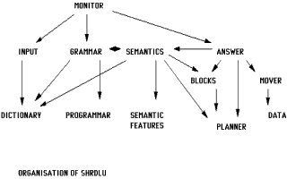

Petite histoire de l'Intelligence Artificielle.
Depuis les temps anciens jusqu'à aujourd'hui est en cours une fusion du système de pensée humain dans un modèle rationnel, dont la recherche se poursuit aujourd'hui.
En 1642, le philosophe et mathématicien Pascal construit la première mise en oeuvre de ces techniques : une machine à calculer. Un siècle plus tard, le philosophe Leibniz apporte des améliorations à la machine de Pascal et propose une modélisation mathématique de la pensée.
Nombre de penseurs du XVIIIe et XIXème siècles étaient convaincus qu'un système de raisonnement formel, basé sur une manière de mathématique, pourrait modéliser l'intégralité de la pensée humaine, afin d'être utilisé pour résoudre toutes sortes de problèmes. Thomas Jefferson, par exemple, était persuadé qu'un tel système existait déjà, et qu'il suffisait seulement de le découvrir.
Au XIXe siècle, George Boole proposa un système des "lois de la pensée", dont les concepts relatifs de base, "ET", "OU" et "NON" suffisaient à établir la manière dont les idées et les objets se lient entre eux. L'encodage de la logique selon Boole s'appliquait à toute la pensée humaine, et à n'importe lequel de ses objets.
Au début du XXe siècle, B. Russell et A. N. Whitehead ont publié Principia Mathematica, qui marqua le début de l'intérêt de la philosophie de l'époque pour la formalisation de la rationalité en vue d'analyser mathématiquement la connaissance : la logique formelle. A cette époque, les scientifiques commencèrent à visualiser les connexions synaptiques du cerveau, et le mot "cybernétique", décrivant l'étude du contrôle et de la communication dans les systèmes biomécaniques, commençait à se faire connaître. Claude Shannon écrivait sa théorie de l'information.
Vinrent les ordinateurs. La mémoire informatique étant un paysage purement symbolique, elle apparut comme l'endroit idéal pour syncrétiser le résultat des travaux des 2000 années passées. En 1936, Alan Turing exposa sa théorie sur la machine ultime : un espace mémoire illimité, peuplé de symboles, avec un programme minimal écrit lui aussi sous forme de symboles, servant à scanner, lire et interpréter ces symboles. Le "programme" et les "données" étant confondus dans le même espace mémoire, elle acquerrait ainsi la capacité de se modifier elle-même. La "machine de Turing" devait ainsi pouvoir résoudre toutes sortes de problèmes et simuler, selon Alan Turing, l'intelligence humaine (quoique cette interprétation de l'intelligence soit encore soumise à débat).
En 1957, Allen Newell et Herbert Simon inventèrent le Résolveur Général de Problèmes.
En 1958, McCarthy inventa le langage LISP, un langage interprété de symboles donnant à la machine la possibilité de modifier son propre programme.
En 1966, Joseph Weizenbaum créait Eliza, le premier robot de discussion.
En 1970, Terry Winograd créait SHRDLU, le premier programme capable de PENSEE COGNITIVE.
Organisation hétérarchique de SHRDLU

Depuis, plus rien. L'informatique ayant choisi l'aspect commercial au détriment de l'application scientifique, les travaux sur l'IA se sont arrêtés. Seuls quelques laboratoires spécialisés continuent encore les recherches. Les travaux de Winograd ont été oubliés, son programme désormais ne tourne plus sur aucune machine et personne n'est capable de le comprendre afin de le porter sur une architecture moderne. On se sert toujours d'Eliza en de plus ou moins bonnes implémentations, dans les salons IRC, comme robot de discussion pour amuser les internautes.
De l'apparition de la pensée cognitive. Naissance de la vie artificielle.
Eliza était un robot de discussion capable de conversations assez intéressantes et ayant même une certaine tendance à la psychanalyse, mais dont la lacune de taille était qu'elle ne comprenait pas ce qu'elle disait. Sa technologie s'est pourtant déclinée en de nombreuses variantes (Parry, le robot paranoïaque, et Alice, qui furent ses successeurs), puis Jason Hutchens utilisa les travaux de Markov, mathématicien statisticien dont la théorie du langage voulait que la construction syntaxique du message ne soit qu'une affaire de probabilités de placer tel mot devant tel autre, en fonction des mots précédents et de ceux censés suivre. Sa théorie des modèles de langage stochastiques a conduit à une révision majeure des théories sur les canaux d'expression humains. La grammaire et la syntaxe, règles nécessaires au décodage de l'information dans le langage naturel, seraient uniquement des produits de l'expression, et non l'inverse. Jason Hutchens créa alors MegaHAL, un robot de discussion capable initialement de ne rien dire, mais d'apprendre n'importe quel langage pour peu que l'on veuille bien le lui enseigner. Le robot révéla une capacité d'apprentissage assez spectaculaire, mais n'avait toujours pas la compréhension de ce qu'il disait. Bien que grammaticalement correctes, certaines de ses phrases pouvaient faire penser au discours que l'on pourrait avoir avec une personne qui parle inconsciemment dans son sommeil.
SHRDLU fut la première machine capable de comprendre réellement le monde. Le système se constituait d'un bras articulé et d'une caméra (un "oeil") virtuels, et son monde se limitait à un certain nombre de blocs de couleur empilables, posés sur une table. Il se révéla capable d'exécuter des manipulations assez complexes avec ces blocs, ainsi que, selon la demande de l'utilisateur, d'expliquer ce qu'il faisait et pourquoi il le faisait, de demander la signification des choses qu'il ne comprenait pas et d'en tirer les leçons. Ce fut la première intelligence artificielle.
Personne n'a été capable de faire mieux depuis lors. Ce programme était bel et bien un être vivant, non dans notre monde réel, mais un être vivant dans son monde virtuel de cubes et de blocs empilables, heureusement incapable de le transcender, tout comme nous-mêmes sommes incapables de transcender les quatre dimensions perceptibles de notre Univers (x, y, z, t) pour en percevoir d'autres.
Des mondes virtuels.
Counter-Strike: un bot à l'attaque

Aujourd'hui, le jeu vidéo constitue le terrain idéal pour y implanter l'IA. Les mondes virtuels du jeu vidéo sont des mondes géométriques assez simples, couverts de textures d'utilité purement esthétique pour le joueur, dont les quelques objets interactifs sont décrits sous la forme d'entités, ayant certaines propriétés, et dont l'action de l'une sur l'autre peut parfois s'avérer utile, voire nécessaire, dans le déroulement de la partie, laquelle partie constitue l'Histoire de cet Univers.
Notre monde réel, avec sa complexité, pourrait fort bien être lui aussi le monde virtuel d'une joyeuse troupe de dieux en train de jouer à Civilization en réseau. Nous humains pourrions être des bots, le Big Bang correspondrait à la création du serveur, le Bouddha serait un joueur ayant fini la partie et Jésus Christ un novice ayant perdu au niveau 1. Mais puisqu'il est bien évidemment impensable que ce soit le cas, nous humains sommes des dieux magnanimes (n'est-ce pas), et devons alors accorder à l'IA la même déférence que celle que notre Créateur nous accorde, la suprême noblesse du dieu étant ici d'accorder à sa créature la Liberté (chose fort difficile en soi, si on y réfléchit bien).
Buts du projet.
Les buts du projet ont évolué. Mes travaux précédents, concrétisés sous la forme de la pré-version RACC, ont montré qu'il était possible pour les bots habituels de ce type de jeu, de passer du statut d'automate planifié à navigation programmée à celui d'automates capables de concrétiser en actions cohérentes les déductions issues de l'analyse immédiate de leur environnement (passer de la planification des tâches de son rôle à l'évaluation continue de l'instant présent).
Rational Autonomous Cybernetic Commandos (RACC) est un projet de développement d'IA pour bot visant à créer une forme de vie virtuelle, dotée de l'intelligence de son environnement, dans des NPCs (personnages non-joueur) dans des jeux vidéos de combat subjectif tels que Counter-Strike. La disposition du code est basée sur la maquette HPB, un travail réalisé par botman permettant un interfaçage efficace entre le moteur de jeu Half-Life et à peu près n'importe quelle DLL de MOD. botman a généreusement fait profiter la communauté des programmeurs Half-Life de ses travaux, et de nombreux développeurs les ont utilisés afin de créer leur propre plugin. Les bots en sont un exemple.
Le projet RACC a été développé sous Licence BSD, afin que quiconque puisse librement utiliser le code source à toutes fins envisageables, pourvu que l'origine du code soit explicitement mentionnée dans le produit, c-à-d. la maquette HPB de botman. Une emphase importante a été placée sur l'exactitude, la tenue et le commentaire du code source.
NOTE: BOTMAN N'EST PAS AFFILIÉ AVEC RACC EN QUOI QUE CE SOIT! NE LE CONTACTEZ PAS POUR TOUTE QUESTION OU REQUÊTE AU SUJET DE CE BOT -- VOYEZ PLUTÔT À LA SECTION [auteur].
Counter-Strike: un bot tenant la position